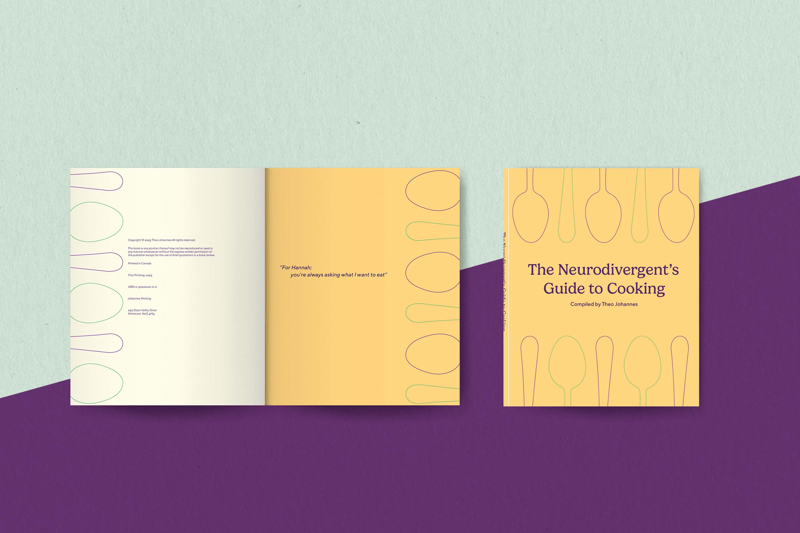

HOME
ABOUT
PORTFOLIO
Some of my Work!
Hill and Sons Brewing Company
Hill and Sons Brewing Company prides itself on creating an experience in every sip. We’re dedicated to celebrating, whatever the occasion. So if you’re looking for a sultry beer to drink while you do the Tango, this one’s for you!

The Neurodivergent's Guide to Cooking
This cookbook is specifically designed for the neurodivergent mind. Each recipe is rated on the spoons scale: how many spoons it uses (both physically and emotionally). One spoon is a minimal effort and five spoons are the most amount of effort. Don’t worry! We will not deceive you as many recipes do, a true neurodivergent was in charge of the rating system (and he has no more spoons to give).
Magna Mater Restaurant
Magna Mater is an herbalistic café that takes a modern approach to apothecarian wellness. The goal is to attract the new-age witch, while also being appealing to the general public. The mood is meant to be welcoming with an air of mystique, which is why the colour palette consists of a rich purple and teal. The spirals symbolize Mother Earth, Magna Mater.
Devil's Advocate
The idea for Devil’s Advocate came from the concept that there is more than one side to every argument. The package is meant to intrigue the consumer and encourage critical thinking by drawing them in with imagery and colours associated with typically rejected or feared perspectives. The idiom “playing Devil’s advocate” tends to be seen as a negative point of view, but this package is playing Devil’s Advocate on that idea.